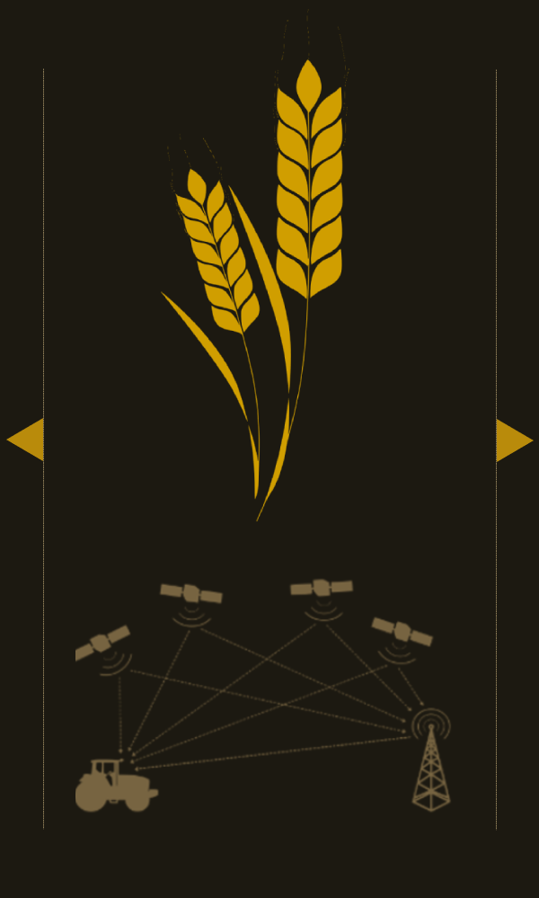

Empowering farmers to grow a better future!
We are passionate about using technology to solve the world's biggest problems, and agriculture is one of those problems.
AI and Blockchain are the future of agriculture.
PathAwayer is using AI and blockchain to create a more efficient, sustainable, and profitable agricultural industry.
Imagine a world where AI and Blockchain are used to improve agriculture
Our platform uses AI and Blockchain to revolutionize agriculture. With our platform, users can register with a web3 identification wallet, choose land for investment or farming purposes, and apply good agricultural practices with the help of our AI algorithms.
“One-third of our world is under the influence of desertification. Every year, 12 million hectares of fertile land in the world become deserts created by human hands due to improper use.”
“Good Agricultural Practices are the processes that should be implemented to make the agricultural production system socially livable, economically profitable, and productive while protecting human health, animal health, and welfare, and caring for the environment.”
“The resulting temperature rise will threaten food production, water resources, human health, coastal settlements, national economies, and the survival of much of the natural world.”
Future of Agriculture
We believe that our platform has the potential to revolutionize the agricultural industry and make it more sustainable, efficient, and profitable. By helping farmers, food producers, and investors to adapt to climate change and desertification, we can help to ensure that the world has enough food to feed its growing population.
Remote Sensing Data
Our satellite data helps farmers monitor large areas and identify changes in the terrain, providing accurate information about soil moisture and other invisible factors.
Tracking Ecosystem
We contribute to farmers' need for tools to collect and process context-appropriate information to make timely crop management decisions.
Agronomy Management
Our robust agricultural monitoring system enables informed decision-making at various levels, reducing price fluctuations and predicting crop needs.
Socio Economic Improvement
We can ensure sustainability goals through an iterative and participatory process are realistic, achievable, and beneficial to all.

Benefits of PathAwayer
PathAwayer is a blockchain-based platform that uses artificial intelligence (AI) to help farmers make more informed decisions about their crops.
AI-powered Remote Sensing
Uses satellite and aerial imagery to collect data on soil quality, crop health, and weather conditions.
Blockchain-enabled Supply Chain
Creates a secure and transparent record of data about crops, from the seed to the kitchen.
Regenerative Agriculture
Uses practices like cover cropping and no-till farming to improve soil health, water quality, and biodiversity.
Good Agricultural Practices
Uses practices like crop rotation, cover cropping, and integrated pest management to improve the sustainability of agricultural production.
Environmental Sustainability
Uses practices like regenerative agriculture and good agricultural practices to protect the environment.
Food Security
Uses practices like increasing agricultural production, and reducing food waste to ensure that everyone has access to sufficient, safe, and nutritious food.
PathAwayer Platform Mechanic
Our platform provides guidance on the implementation of good agricultural practices. These practices can help farmers to improve their yields, reduce their costs, and protect the environment.


Key Terms in PathAwayer Platform
This section provides definitions of key agricultural terms. These terms are used in the context of AI-powered agriculture, which is a growing field that uses artificial intelligence to improve crop yields, reduce the use of chemicals, and increase sustainability.
Agronomy Management
Provides farmers with data and insights on soil quality, weather, and plant health. This information can be used to improve crop yields, reduce the need for fertilizers, and prevent crop losses. Artificial Intelligence (AI) is used to analyze this data and to provide farmers with recommendations for the best practices to implement in their specific situations.
Remote Sensing
Uses satellite and aerial imagery to collect data on soil quality, crop health, and weather conditions. This data can be used to monitor crop health, identify problems early on, and make better decisions about crop management. AI is used to analyze this data and to provide farmers with insights into their crops and the environment.
Regenerative Agriculture
Provides farmers with guidance on the implementation of restorative agriculture practices, such as cover cropping, no-till farming, and crop rotation. These practices can help to improve soil health, reduce the use of chemicals, and increase crop yields. AI is used to analyze this data and to provide farmers with recommendations for the best practices to implement in their specific situations.
Good Agricultural Practices
Provides farmers with guidance on the implementation of good agricultural practices, such as crop rotation, cover cropping, and integrated pest management. These practices can help to improve soil health, reduce the use of chemicals, and increase crop yields. AI is used to analyze this data and to provide farmers with recommendations for the best practices to implement in their specific situations.
AI & Blockchain Integration
Creates a secure and transparent record of data about crops, from the seed to the kitchen. This information can be used to track the provenance of food, improve food safety, and reduce food fraud. AI is used to analyze this data and to provide farmers with insights into the market and demand for their crops.